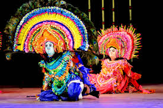
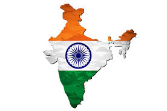

Culture
Art, dance & music
Discover performance traditions where movement, rhythm and storytelling meet.
Read about culture →From living traditions and classical arts to regional food, languages, festivals and architecture, Incredible India explores the many expressions that shape India's cultural identity.
India's cultural landscape is shaped by countless regional histories, languages, communities and artistic traditions. Its diversity can be seen in everyday life — in what people wear, cook, sing, celebrate and build.
This website brings those themes together as a simple cultural blog for learning, appreciation and awareness.


Discover performance traditions where movement, rhythm and storytelling meet.
Read about culture →
Explore monuments, forts, temples and architectural traditions that preserve history.
Explore heritage →
Learn how ingredients, recipes and food customs reflect the diversity of India.
Taste the stories →
Read about festivals and community celebrations observed across the country.
Explore festivals →Languages, clothing, cuisines, rituals, architecture and artistic forms vary widely across India. Together, they create a cultural mosaic in which regional identities remain important while belonging to a shared national story.
“Unity in diversity” is often used to describe the coexistence of many cultural expressions within India.
Move between the sections to learn about India's living traditions, historical heritage, regional cuisine and festive calendar.
About this project